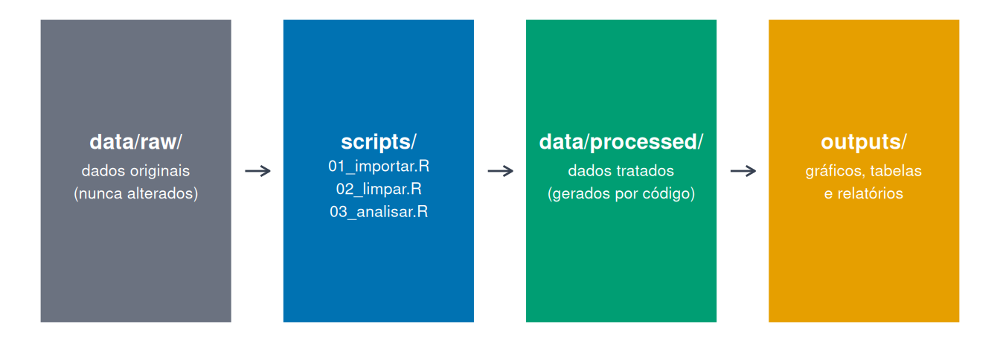
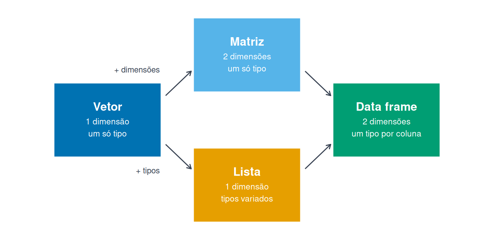

pacotes <- c(
"tidyverse", # manipulação, importação e gráficos (dplyr, readr, ggplot2...)
"readxl", # leitura de planilhas do Excel
"usethis" # criação de projetos (usethis::create_project())
)
# Quais ainda não estão instalados?
faltando <- pacotes[!pacotes %in% rownames(installed.packages())]
if (length(faltando) > 0) {
message("Instalando: ", paste(faltando, collapse = ", "))
install.packages(faltando)
} else {
message("Todos os pacotes já estão instalados!")
}1 Introdução ao R e RStudio
Carga horária: 10 horas
Neste módulo você se familiarizará com o ambiente de desenvolvimento RStudio, aprenderá as estruturas de dados fundamentais do R, adotará boas práticas de organização de projetos e escreverá suas primeiras funções reutilizáveis.
Objetivos de aprendizagem. Ao final deste módulo, você será capaz de:
- instalar o R e o RStudio e reconhecer a função de cada painel da interface;
- usar o R para operações aritméticas, lógicas e de comparação, e consultar a documentação das funções;
- organizar um trabalho de análise em um Projeto RStudio com estrutura de pastas padronizada;
- criar e manipular vetores, listas, data frames e matrizes;
- importar um arquivo CSV e fazer uma primeira inspeção dos dados;
- escrever funções próprias usando condicionais e laços.
Pacotes necessários. Este módulo usa os pacotes abaixo:
| Pacote | Para que serve |
|---|---|
tidyverse |
Conjunto de pacotes para manipular, importar e visualizar dados (dplyr, readr, ggplot2 e outros) |
readxl |
Leitura de planilhas do Excel |
usethis |
Criação e organização de projetos |
Depois de instalar o R e o RStudio (Seção 1.2), execute o bloco abaixo no RStudio. Ele verifica quais pacotes já estão instalados e instala apenas os que estiverem faltando.
Dados do módulo. Os exemplos e exercícios usam uma base fictícia de alunos e escolas estaduais do Paraná, criada para imitar os problemas típicos de uma base real:
| Arquivo | Conteúdo |
|---|---|
| alunos_2023.csv | Base de alunos, com erros de digitação, duplicatas e códigos de ausência |
Para acompanhar no RStudio, baixe o arquivo e salve-o na pasta data/raw do seu projeto (a criação do projeto é explicada na Seção 1.3.5). No Editor de R, ele já está disponível.
1.1 Sobre o R e o RStudio
O R é uma linguagem de programação criada para análise estatística de dados. Algumas características explicam sua popularidade:
- é livre e gratuito, de código aberto, o que evita custos de licença para a rede pública;
- funciona em Windows, macOS e Linux;
- é mantido pela R Foundation (R Core Team 2024) e usado por pesquisadores, professores, estudantes e órgãos públicos no mundo todo;
- conta com milhares de pacotes que acrescentam funções, dados e métodos estatísticos;
- gera gráficos de qualidade de publicação e relatórios reproduzíveis.
O RStudio não é a linguagem: é o ambiente de desenvolvimento onde escrevemos código em R com mais conforto, com editor, console, visualização de gráficos e ajuda em uma única janela. Na prática, instalamos os dois: o R faz o trabalho, e o RStudio é a interface.
1.1.1 O que dá para fazer com R
Além das análises estatísticas, o R produz materiais que circulam no dia a dia da escola e da Secretaria:
- Relatórios e documentos que se atualizam sozinhos quando os dados mudam (Módulo 2);
- Painéis e aplicativos interativos com o pacote Shiny, para consulta de indicadores;
- Livros e sites, como este próprio material, escrito em Quarto;
- Rotinas automatizadas, que geram o mesmo relatório toda semana, sem ninguém precisar apertar nada.
1.1.2 Onde buscar ajuda
Guarde estes endereços: eles resolvem a maior parte das dúvidas que aparecem depois do curso.
| Tipo | Material |
|---|---|
| Livro de referência (gratuito, em inglês) | R for Data Science (Wickham et al. 2023) |
| Material em português | Materiais gratuitos da Curso-R |
| Material em português | Estatística Computacional com R (LEG/UFPR) |
| Perguntas e respostas | Stack Overflow |
| Notícias e tutoriais | R-bloggers |
| Colas de referência rápida | Cheatsheets da Posit |
1.2 Instalação do R e do RStudio
NotaAinda não instalou o R? Use o Editor de R online
Se você ainda não instalou o R acompanhe o curso pelo Editor de R online.
O editor também fica sempre à mão no menu lateral. Ele serve para praticar, mas não substitui a instalação: os objetos e pacotes se perdem ao recarregar a página. Assim que puder, instale o R e o RStudio seguindo os passos abaixo.
A instalação tem duas etapas, nesta ordem: primeiro a linguagem, depois o ambiente de desenvolvimento.
1. Instalar o R
- Acesse https://cran.r-project.org/.
- Clique no link do seu sistema operacional (Windows, macOS ou Linux).
- No Windows, escolha “base” e depois “Download R for Windows”.
- Execute o instalador e aceite as opções padrão.
2. Instalar o RStudio
- Acesse https://posit.co/download/rstudio-desktop/.
- Baixe o arquivo correspondente ao seu sistema. A página costuma identificá-lo automaticamente.
- Execute o instalador e aceite as opções padrão.
AvisoAtenção
No Linux, prefira instalar o R pelo gerenciador de pacotes da distribuição (por exemplo, sudo apt install r-base) e só depois o RStudio. No Windows, evite instalar em pastas cujo caminho tenha acentos ou espaços: isso costuma causar erros na instalação de pacotes.
DicaDica
Não é preciso abrir o R diretamente: o RStudio o encontra sozinho. Se você tiver mais de uma versão do R instalada, escolha qual usar em Tools → Global Options → General → R version.
1.3 O Ambiente RStudio
1.3.1 Interface e Painéis
O RStudio está dividido em quatro painéis principais:
| Painel | Localização padrão | Função |
|---|---|---|
| Editor de scripts | Superior esquerdo | Escrever e editar código |
| Console | Inferior esquerdo | Executar comandos interativamente |
| Ambiente / Histórico | Superior direito | Ver objetos carregados e histórico |
| Arquivos / Gráficos / Pacotes / Ajuda | Inferior direito | Navegação e documentação |
Clique em um painel para destacar a explicação dele logo abaixo.
Vale conhecer o que há em cada um deles.
Console (inferior esquerdo). É onde o R de fato executa os comandos. Digite e pressione Enter. Serve para testes rápidos, consultas de ajuda e verificações. O que é digitado aqui não fica salvo: o que você quiser guardar deve estar num script.
x <- 3
y <- 2
x + yEditor de scripts (superior esquerdo). É onde o trabalho de verdade acontece. Guarda arquivos .R, .qmd, .Rmd e outros, que podem ser salvos, revisados e reexecutados. Crie um novo script em File → New File → R Script.
Ambiente e Histórico (superior direito).
- Environment lista os objetos da sessão: vetores, tabelas, funções. Clicar em uma tabela abre uma visualização em planilha.
- History guarda os comandos já executados.
- Connections conecta a bancos de dados (Módulo 2).
ls() # lista os objetos da sessão
rm(x) # remove um objeto
rm(list = ls()) # limpa o ambiente inteiroArquivos, Gráficos, Pacotes e Ajuda (inferior direito).
- Files: navegador de arquivos da pasta de trabalho.
- Plots: mostra os gráficos gerados, com botão Export para salvar.
- Packages: lista os pacotes instalados; a caixa de seleção carrega o pacote, e o botão Install instala novos.
- Help: documentação das funções.
- Viewer: exibe páginas HTML e conteúdo interativo, como gráficos do plotly e aplicativos Shiny.
DicaDica
Use Ctrl + Enter para executar a linha atual (ou seleção) do editor diretamente no console. É o atalho mais importante do RStudio.
Outros atalhos essenciais:
# Ctrl + Shift + N → Novo script
# Ctrl + S → Salvar script
# Alt + - → Operador de atribuição <-
# Ctrl + Shift + M → Pipe |> (ou %>%)
# Ctrl + L → Limpar console
# F1 (com cursor na função) → Abre ajuda
# Esc → Cancela o comando incompleto no console
# Seta para cima → Traz de volta o último comando executado1.3.2 Ajuda e documentação
Nenhum analista decora argumentos de função. A documentação está a um comando de distância, e aprender a consultá-la vale mais do que memorizar:
?mean # abre a ajuda da função na aba Help
help(mean) # equivalente
example(mean) # roda os exemplos da documentação
args(mean) # apenas os argumentos da função
??"standard deviation" # busca por assunto (em inglês) nos pacotes instalados
search() # pacotes carregados nesta sessãoA página de ajuda segue sempre a mesma estrutura: descrição, uso (Usage), argumentos (Arguments), detalhes, valor retornado (Value) e, no fim, exemplos prontos para copiar. Os exemplos costumam ser a parte mais útil.
A documentação do R é escrita em inglês, por isso a busca com ?? também precisa usar termos em inglês: ??"desvio padrão" não encontra nada, mas ??"standard deviation" encontra a função sd(). No Editor de R online, ?mean e help(mean) também abrem a documentação na aba Help, como no RStudio.
DicaDica
Com o cursor sobre o nome de uma função no editor, F1 abre a ajuda dela. E ao digitar o nome de uma função seguido de (, pressione Tab para ver a lista de argumentos.
1.3.3 Corrigindo erros no console
Quando um comando fica incompleto, o console troca o sinal > por + e fica esperando o restante da expressão:
> 4 + 3 +
+
+
AvisoAtenção
No console, não é possível voltar o cursor para uma linha já enviada e corrigi-la. Apertar Enter de novo só acrescenta mais linhas com +.
Para sair dessa situação:
- Pressione Esc para cancelar o comando. O console volta a mostrar
>. - Pressione a seta para cima para trazer o comando de volta.
- Corrija o comando (por exemplo,
4 + 3) e pressione Enter.
DicaDica
Para evitar esse problema, escreva o código no editor de scripts e execute com Ctrl + Enter. No editor, você pode voltar a qualquer linha, corrigir e executar de novo.
1.3.4 Entendendo as mensagens de erro
Algumas mensagens de erros comuns no R:
| Mensagem | O que significa | Como resolver |
|---|---|---|
objeto 'x' não encontrado |
O objeto não existe na sessão | Confira a grafia e se o código que o cria foi executado |
não foi possível encontrar a função "filter" |
A função não existe ou o pacote não foi carregado | Rode library(dplyr) ou confira o nome da função |
unexpected symbol / unexpected ')' |
Erro de digitação: vírgula, parêntese ou aspas faltando ou sobrando | Leia a linha indicada, contando parênteses e aspas |
O console mostra + e não responde |
O comando está incompleto | Pressione Esc (veja Seção 1.3.3) |
NotaConceito
Uma distinção útil: erro interrompe a execução; aviso (warning) deixa o código terminar, mas alerta sobre algo suspeito, como valores NA gerados numa conversão; mensagem é apenas informativa, como as que aparecem ao carregar um pacote.
DicaExperimente
Rode o bloco abaixo e leia a mensagem de erro com calma. Depois corrija o código, tirando o comentário da linha que cria o objeto, e rode de novo.
E aqui, encontre o erro de digitação (falta alguma coisa):
1.3.5 Projetos e Organização de Diretórios
Sempre trabalhe dentro de um Projeto RStudio (.Rproj). Isso garante que todos os caminhos de arquivo sejam relativos ao diretório do projeto, tornando o código portável.
Criando um projeto:
File → New Project → New Directory → New Project- Dê um nome descritivo (ex.:
analise_seed_2024) - Marque “Open in new session”
Estrutura recomendada de diretórios:
analise_seed_2024/
├── data/
│ ├── raw/ # dados brutos — NUNCA editar manualmente
│ └── processed/ # dados tratados
├── scripts/ # scripts R numerados em ordem de execução
├── outputs/
│ ├── graficos/
│ └── relatorios/
├── docs/ # documentação e metadados
└── analise_seed_2024.Rproj# Crie a estrutura de pastas com funções do R base
# (o pacote usethis também oferece usethis::create_project())
dir.create("data/raw", recursive = TRUE)
dir.create("data/processed", recursive = TRUE)
dir.create("scripts")
dir.create("outputs/graficos", recursive = TRUE)
dir.create("outputs/relatorios", recursive = TRUE)
dir.create("docs")
1.3.6 Instalação e Gerenciamento de Pacotes
# Instalar do CRAN
install.packages("tidyverse")
# Instalar múltiplos pacotes de uma vez
install.packages(c("readxl", "openxlsx", "lubridate"))
# Instalar do GitHub (requer remotes)
install.packages("remotes")
remotes::install_github("usuario/repositorio")
# Verificar pacotes instalados
installed.packages()[, "Package"] |> head(20)
# Atualizar todos os pacotes
update.packages(ask = FALSE)
AvisoAtenção
Nunca inclua install.packages() em scripts que serão executados em produção ou compartilhados. Use esse comando apenas na sessão interativa.
1.4 Operações Básicas em R
1.4.1 Operações aritméticas
No nível mais simples, o R funciona como uma calculadora:
2 + 3 # soma#> [1] 510 - 4 # subtração#> [1] 65 * 2 # multiplicação#> [1] 109 / 3 # divisão#> [1] 32^3 # potência#> [1] 8sqrt(16) # raiz quadrada#> [1] 410 %% 3 # resto da divisão#> [1] 110 %/% 3 # parte inteira da divisão#> [1] 3A ordem de prioridade é a da matemática: primeiro os parênteses, depois a potência, em seguida multiplicação e divisão, e por último soma e subtração.
2 + 3 * 4 # a multiplicação vem antes#> [1] 14(2 + 3) * 4 # os parênteses mudam o resultado#> [1] 202 * 5^2 # a potência vem antes#> [1] 50(2 * 5)^2#> [1] 100
DicaDica
Na dúvida, use parênteses. Eles não atrapalham o resultado e deixam a intenção clara para quem lê o código depois, inclusive você.
1.4.2 Criando objetos
Um objeto guarda um valor para ser usado depois. A atribuição é feita com <- (atalho Alt + -):
media_turma <- 7.2
n_alunos <- 32
media_turma * n_alunos#> [1] 230.4Escrever o nome do objeto no console mostra seu conteúdo. Para atribuir e mostrar ao mesmo tempo, envolva a linha em parênteses:
(total_faltas <- 15 + 8 + 22)#> [1] 451.4.3 Regras para nomear objetos
Algumas regras são obrigatórias, e o R acusa erro quando não são seguidas:
- Comece por uma letra.
nota1funciona;1notadá erro. - Sem espaços nem símbolos como
@,#,$ou-. Use o sublinhado:nota_matematica. - Maiúsculas e minúsculas são diferentes.
turma,TurmaeTURMAsão três objetos distintos. Essa é uma fonte comum de erros do tipo “objeto não encontrado”. - Não use palavras reservadas, como
if,else,for,function,TRUEeFALSE.
media_2023 <- 7.5 # válido
2023_media <- 7.5 # erro: começa com número
media-2023 <- 7.5 # erro: o hífen é lido como subtração
for <- 7.5 # erro: palavra reservadaAlém dessas, há duas recomendações importantes. A primeira é evitar nomes que já pertencem a funções do R, como mean, data, sum ou df: o código continua funcionando, mas fica confuso e pode atrapalhar mais adiante. A segunda é preferir nomes descritivos a nomes curtos demais: media_mat diz mais do que x. As convenções de escrita estão em Seção 1.6.
1.4.4 Comparações e operadores lógicos
Comparações devolvem TRUE ou FALSE, e são a base dos filtros que usaremos no Módulo 2:
| Operador | Significado | Exemplo | Resultado |
|---|---|---|---|
== |
igual a | 7 == 7 |
TRUE |
!= |
diferente de | 7 != 5 |
TRUE |
> |
maior que | 7 > 5 |
TRUE |
< |
menor que | 7 < 5 |
FALSE |
>= |
maior ou igual | 7 >= 7 |
TRUE |
<= |
menor ou igual | 7 <= 5 |
FALSE |
Os operadores lógicos combinam condições:
&(E): verdadeiro só quando as duas condições são verdadeiras.(7 > 5) & (3 > 4)devolveFALSE.|(OU): verdadeiro quando pelo menos uma é verdadeira.(7 > 5) | (3 > 4)devolveTRUE.!(negação): inverte o resultado.!(7 > 5)devolveFALSE.
nota <- 6.5
faltas <- 12
nota >= 6 & faltas <= 10 # aprovado por nota E por frequência?#> [1] FALSEnota >= 6 | faltas <= 10 # atende a pelo menos um critério?#> [1] TRUE!(nota >= 6) # não atingiu a nota mínima?#> [1] FALSE
AvisoAtenção
Não confunda = com ==. Um sinal atribui um valor; dois sinais comparam. Trocar um pelo outro dentro de um filtro é um dos erros mais frequentes de quem está começando.
Existem ainda && e ||, com dois sinais. Eles aceitam apenas um valor TRUE ou FALSE de cada lado (com vetores maiores, o R acusa erro) e são usados dentro de if. Para filtrar tabelas, use sempre as versões de um sinal, & e |.
DicaExperimente
Mude os valores de nota e faltas e veja como as respostas mudam. O código roda no seu navegador.
NotaConceito
Comparações e operadores lógicos aparecem o tempo todo daqui em diante: para filtrar alunos (filter(nota_mat >= 7)), para classificar situações (case_when()) e para contar quantos casos atendem a um critério, já que a média de um vetor de TRUE e FALSE é a proporção de TRUE.
1.5 Objetos e Estruturas de Dados
As quatro estruturas a seguir cobrem quase tudo o que se faz em análise de dados. A diferença entre elas está em duas perguntas: os elementos precisam ser do mesmo tipo? E quantas dimensões a estrutura tem?

| Estrutura | Dimensões | Tipos | Uso típico |
|---|---|---|---|
| Vetor | 1 | um só | Uma coluna de notas |
| Matriz | 2 | um só | Tabelas numéricas, cálculos |
| Lista | 1 | variados | Configurações, resultados de funções |
| Data frame | 2 | um por coluna | A base de dados propriamente dita |
1.5.1 Vetores
O vetor é a unidade básica do R. Todo valor escalar é, na verdade, um vetor de comprimento 1.
# Vetores numéricos
notas <- c(7.5, 8.0, 6.5, 9.0, 5.5)
notas#> [1] 7.5 8.0 6.5 9.0 5.5# Operações vetorizadas (sem loop!)
notas * 10 # multiplica todos os elementos#> [1] 75 80 65 90 55notas[notas >= 7] # filtra elementos >= 7#> [1] 7.5 8.0 9.0mean(notas) # média#> [1] 7.3sd(notas) # desvio padrão#> [1] 1.350926
DicaExperimente
O bloco abaixo roda no seu navegador, sem precisar do R instalado. Altere os valores e clique em Executar código. Na primeira execução, o R leva alguns segundos para carregar.
Pratique 1. O vetor matriculas traz o número de alunos de cinco escolas. Selecione apenas as escolas com mais de 400 alunos.
Dentro dos colchetes vai uma condição lógica sobre o próprio vetor, como matriculas > 400.
Pratique 2. Vetores podem ter nomes. Descubra quantos alunos tem a escola Primavera, usando o nome e não a posição.
Os nomes do vetor aparecem com names(matriculas). Escreva o nome exatamente como está lá, entre aspas.
Pratique 3. Nem toda escola informou o número de alunos: uma delas está como NA. Calcule a média ignorando o valor ausente.
A maioria das funções de resumo do R tem o argumento na.rm, que remove os valores ausentes antes do cálculo.
# Vetor de caracteres
escolas <- c("Colégio Estadual A", "Colégio Estadual B", "EEB C")
# Vetor lógico
aprovado <- notas >= 6
aprovado#> [1] TRUE TRUE TRUE TRUE FALSE# Fator (variável categórica; a ordem dos níveis é definida em `levels`)
turno <- factor(
c("Matutino", "Vespertino", "Matutino", "Noturno"),
levels = c("Matutino", "Vespertino", "Noturno")
)
levels(turno)#> [1] "Matutino" "Vespertino" "Noturno"table(turno)#> turno
#> Matutino Vespertino Noturno
#> 2 1 11.5.2 Matrizes
# Matriz de notas por bimestre
notas_bim <- matrix(
data = c(7, 8, 6, 9, 8, 7, 8, 9, 7, 6),
nrow = 5,
ncol = 2,
dimnames = list(
c("Ana", "Bruno", "Carla", "Diego", "Eva"),
c("1º Bim", "2º Bim")
)
)
notas_bim#> 1º Bim 2º Bim
#> Ana 7 7
#> Bruno 8 8
#> Carla 6 9
#> Diego 9 7
#> Eva 8 6rowMeans(notas_bim) # média por aluno#> Ana Bruno Carla Diego Eva
#> 7.0 8.0 7.5 8.0 7.0colMeans(notas_bim) # média por bimestre#> 1º Bim 2º Bim
#> 7.6 7.4Pratique 1. Descubra a média de cada bimestre (ou seja, a média de cada coluna) na matriz notas_bim.
Existem rowMeans() para as linhas e colMeans() para as colunas. Cada coluna aqui é um bimestre.
Pratique 2. Mostre a nota da Carla no 2º bimestre. Lembre-se da ordem [linha, coluna].
Você pode usar números ([3, 2]) ou os nomes entre aspas (["Carla", "2º Bim"]).
Pratique 3. Descubra quantas linhas e colunas a matriz tem, em um único comando.
Existem nrow() e ncol() separadamente, mas uma função devolve as duas informações de uma vez.
1.5.3 Listas
Listas aceitam elementos de tipos diferentes — inclusive outras listas.
escola_info <- list(
nome = "Colégio Estadual Prof. João Silva",
municipio = "Curitiba",
alunos = 1250,
turnos = c("Matutino", "Vespertino"),
ativo = TRUE
)
# Acesso por nome (recomendado)
escola_info$nome#> [1] "Colégio Estadual Prof. João Silva"escola_info[["alunos"]]#> [1] 1250# Acesso por posição
escola_info[[3]]#> [1] 1250
DicaExperimente
Acrescente um elemento à lista (por exemplo, diretora = "Maria") e acesse-o pelo nome.
Pratique. Acesse o segundo turno da escola, ou seja, o segundo elemento do vetor guardado no item turnos da lista.
escola_info$turnos devolve um vetor. Para pegar um elemento de um vetor, use colchetes simples com a posição.
Pratique 2. Mostre apenas os nomes dos itens da lista, sem o conteúdo.
A mesma função serve para ver os nomes de um vetor nomeado e os de uma lista. Em um data frame, ela devolve os nomes das colunas.
1.5.4 Data Frames
O data frame é a estrutura mais usada em análise de dados: uma tabela em que cada coluna é um vetor do mesmo comprimento.
# Criando um data frame manualmente
alunos <- data.frame(
id = 1:5,
nome = c("Ana", "Bruno", "Carla", "Diego", "Eva"),
nota = c(8.5, 7.0, 9.2, 6.1, 7.8),
aprovado = c(TRUE, TRUE, TRUE, FALSE, TRUE)
)
alunos#> id nome nota aprovado
#> 1 1 Ana 8.5 TRUE
#> 2 2 Bruno 7.0 TRUE
#> 3 3 Carla 9.2 TRUE
#> 4 4 Diego 6.1 FALSE
#> 5 5 Eva 7.8 TRUE# Inspecionar
nrow(alunos) # número de linhas#> [1] 5ncol(alunos) # número de colunas#> [1] 4dim(alunos) # dimensões#> [1] 5 4str(alunos) # estrutura#> 'data.frame': 5 obs. of 4 variables:
#> $ id : int 1 2 3 4 5
#> $ nome : chr "Ana" "Bruno" "Carla" "Diego" ...
#> $ nota : num 8.5 7 9.2 6.1 7.8
#> $ aprovado: logi TRUE TRUE TRUE FALSE TRUEsummary(alunos) # resumo estatístico#> id nome nota aprovado
#> Min. :1 Length :5 Min. :6.10 Mode :logical
#> 1st Qu.:2 N.unique :5 1st Qu.:7.00 FALSE:1
#> Median :3 N.blank :0 Median :7.80 TRUE :4
#> Mean :3 Min.nchar:3 Mean :7.72
#> 3rd Qu.:4 Max.nchar:5 3rd Qu.:8.50
#> Max. :5 Max. :9.20# Acessar colunas
alunos$nota#> [1] 8.5 7.0 9.2 6.1 7.8alunos[["nome"]]#> [1] "Ana" "Bruno" "Carla" "Diego" "Eva"# Acessar linhas e células [linha, coluna]
alunos[1, ] # primeira linha#> id nome nota aprovado
#> 1 1 Ana 8.5 TRUEalunos[, "nota"] # coluna nota#> [1] 8.5 7.0 9.2 6.1 7.8alunos[2, "nome"] # célula específica#> [1] "Bruno"# Filtrar linhas
alunos[alunos$nota >= 7, ]#> id nome nota aprovado
#> 1 1 Ana 8.5 TRUE
#> 2 2 Bruno 7.0 TRUE
#> 3 3 Carla 9.2 TRUE
#> 5 5 Eva 7.8 TRUEPratique: selecione, do data frame alunos, apenas os alunos aprovados.
A coluna aprovado já é um vetor lógico: alunos$aprovado. Antes da vírgula vai a condição sobre as linhas.
Pratique 2. Crie a coluna situacao, com o texto "Aprovado" para quem tem nota 7 ou mais e "Reprovado" para os demais. Use ifelse().
ifelse(condicao, valor_se_verdadeiro, valor_se_falso). A condição usa a coluna alunos$nota.
Pratique 3. Ordene o data frame da maior para a menor nota.
order() devolve as posições na ordem crescente. Para inverter, use o argumento decreasing = TRUE.
1.5.5 Primeiro contato com a base do curso
A base de alunos usada ao longo do curso é o arquivo alunos_2023.csv, que você baixou no início do módulo e salvou na pasta data/raw do projeto. Com o R base, a importação é feita por read.csv():
base <- read.csv("data/raw/alunos_2023.csv", fileEncoding = "UTF-8")
dim(base) # linhas e colunas#> [1] 426 12head(base[, c("escola", "serie", "turno", "nota_mat")])#> escola serie turno nota_mat
#> 1 Colégio Estadual Araucária 3ª EM Matutino 6.3
#> 2 Colégio Estadual Oeste Paranaense 8º Ano Vespertino 6.8
#> 3 Colégio Estadual do Campo Água Clara 2ª EM Noturno 4.7
#> 4 Colégio Estadual Ipê Amarelo 1ª EM Matutino 7.6
#> 5 Colégio Estadual Nova Esperança 8º Ano Matutino 6.3
#> 6 Colégio Estadual Nova Esperança 2ª EM Matutino 5.6Uma inspeção rápida já revela problemas:
summary(base$nota_mat) # nota máxima 99? Notas vão de 0 a 10...#> Min. 1st Qu. Median Mean 3rd Qu. Max.
#> 2.800 5.400 6.200 7.085 7.100 99.000table(base$turno) # o mesmo turno escrito de formas diferentes#>
#> matutino Matutino MATUTINO Matutino noturno Noturno
#> 12 179 8 14 6 50
#> NOTURNO Noturno vespertino Vespertino VESPERTINO Vespertino
#> 6 2 3 136 6 4
AvisoAtenção
Nesta base, o valor 99 é um código que indica aluno ausente na avaliação, e não uma nota. Se calcularmos a média sem tratar esse código, o resultado ficará distorcido. Problemas como esse, e as grafias diferentes de um mesmo turno, serão corrigidos no Módulo 2.
1.5.6 Resumo dos Tipos de Dados
# Verificar e converter tipos
x <- "42"
class(x) # "character"#> [1] "character"as.numeric(x) # 42#> [1] 42y <- 1
is.logical(y) # FALSE#> [1] FALSEas.logical(y) # TRUE (qualquer != 0 é TRUE)#> [1] TRUE# Valores especiais
NA # Not Available (dado ausente)#> [1] NANULL # objeto vazio#> NULLNaN # Not a Number (ex: 0/0)#> [1] NaNInf # Infinito (ex: 1/0)#> [1] Infis.na(c(1, NA, 3)) # detectar NAs#> [1] FALSE TRUE FALSE1.6 Boas Práticas de Organização
1.6.1 Convenções de Nomenclatura
# RECOMENDADO: snake_case — padrão do tidyverse
total_alunos <- 1250
taxa_aprovacao <- 0.87
nome_escola <- "CEP"
# EVITAR:
TotalAlunos <- 1250 # CamelCase
total.alunos <- 1250 # ponto (confunde com métodos, ex.: print.data.frame)
x <- 1250 # sem significado1.6.2 Comentários
# ============================================================
# Script: 01_importacao_dados.R
# Autor: Servidor SEED-PR
# Data: 2024-03-15
# Desc: Importa e confere a base de alunos de 2023
# ============================================================
# --- 1. CARREGAR PACOTES ----
library(tidyverse)
library(readxl)
# --- 2. IMPORTAR DADOS ----
alunos_raw <- read_csv("data/raw/alunos_2023.csv")
# Conferir as dimensões esperadas (426 linhas)
nrow(alunos_raw)1.6.3 Controle de Versão com Git/GitHub
O Git registra cada alteração no seu código, permitindo voltar a versões anteriores.
# No terminal do RStudio (aba Terminal):
# Configurar identidade (apenas uma vez por máquina)
# git config --global user.name "Seu Nome"
# git config --global user.email "seu@email.com"
# Iniciar repositório (dentro do projeto)
# git init
# Adicionar arquivos ao controle de versão
# git add scripts/01_importacao_dados.R
# Registrar mudança com mensagem descritiva
# git commit -m "Adiciona script de importação da base de alunos"
# Enviar para o GitHub
# git push origin main
# Com usethis é ainda mais simples:
library(usethis)
use_git() # inicializa git no projeto
use_github() # cria repositório no GitHub e faz o push inicial1.7 Scripts e Funções
1.7.1 Scripts .R e .Rmd
Um script .R é um arquivo de texto puro com comandos R. Um .Rmd combina texto em Markdown com blocos de código — ideal para relatórios.
Convenção de nomenclatura para scripts em sequência:
scripts/
├── 01_importar_dados.R
├── 02_limpar_dados.R
├── 03_analisar.R
└── 04_gerar_relatorio.Rmd1.7.2 Funções Definidas pelo Usuário
# Sintaxe básica
calcular_media_ponderada <- function(notas, pesos) {
if (length(notas) != length(pesos)) {
stop("'notas' e 'pesos' devem ter o mesmo comprimento.")
}
sum(notas * pesos) / sum(pesos)
}
# Usando a função
notas <- c(7.0, 8.5, 6.0, 9.0)
pesos <- c(1, 2, 1, 3)
calcular_media_ponderada(notas, pesos)#> [1] 8.142857# Função com múltiplos retornos (usando lista)
resumo_turma <- function(notas, corte = 6.0) {
list(
n_alunos = length(notas),
media = round(mean(notas), 2),
mediana = median(notas),
aprovados = sum(notas >= corte),
reprovados = sum(notas < corte),
taxa_aprov = round(mean(notas >= corte) * 100, 1)
)
}
resumo <- resumo_turma(c(8.5, 4.0, 7.2, 6.0, 9.1, 5.5))
resumo$taxa_aprov#> [1] 66.7Pratique: complete a função para que ela devolva a proporção de alunos com frequência suficiente (75% ou mais).
frequencias >= minimo devolve TRUE e FALSE. A média de um vetor lógico é a proporção de TRUE.
1.7.3 Estruturas de Controle
# if / else
classificar_aluno <- function(nota) {
if (nota >= 7.0) {
"Aprovado"
} else if (nota >= 5.0) {
"Recuperação"
} else {
"Reprovado"
}
}
classificar_aluno(6.5)#> [1] "Recuperação"# for — iterar sobre vetor
municipios <- c("Curitiba", "Londrina", "Maringá")
for (municipio in municipios) {
cat("Processando:", municipio, "\n")
}#> Processando: Curitiba
#> Processando: Londrina
#> Processando: Maringá# while — executar enquanto condição for verdadeira
tentativas <- 0
while (tentativas < 3) {
tentativas <- tentativas + 1
cat("Tentativa", tentativas, "\n")
}#> Tentativa 1
#> Tentativa 2
#> Tentativa 3
DicaExperimente
Mude as notas do vetor e veja a classificação de cada uma. Tente também alterar os pontos de corte dentro da função.
# apply — aplica função sobre margens de matriz
notas_mat <- matrix(c(7,8,6,9, 8,7,9,6), nrow = 4)
apply(notas_mat, 1, mean) # média por linha (aluno)#> [1] 7.5 7.5 7.5 7.5apply(notas_mat, 2, mean) # média por coluna (bimestre)#> [1] 7.5 7.5# sapply — aplica função em vetor, retorna vetor simplificado
sapply(c(8.5, 4.0, 7.2), classificar_aluno)#> [1] "Aprovado" "Reprovado" "Aprovado"# lapply — retorna sempre uma lista
lapply(1:3, function(x) x^2)#> [[1]]
#> [1] 1
#>
#> [[2]]
#> [1] 4
#>
#> [[3]]
#> [1] 9
DicaDica
No tidyverse, prefira as funções purrr::map() em vez de lapply(). São mais consistentes e integradas ao fluxo de trabalho moderno do R.
1.8 Pratique no navegador
Os exercícios abaixo rodam aqui mesmo, no navegador. Substitua os ______ pelo código correto e clique em Executar código. Se precisar, use Mostrar dica para ver uma dica e Mostrar solução para ver a resposta.
1. Calcule a média do número de matrículas das cinco escolas.
Qual função do R calcula a média de um vetor numérico? Ela foi usada na seção sobre vetores.
2. Mostre apenas as notas abaixo de 6.
Dentro dos colchetes, escreva uma condição lógica sobre notas, como na seção sobre vetores: notas[notas >= 7].
3. Complete a função taxa_aprovacao() para que ela retorne a proporção de alunos com nota maior ou igual ao ponto de corte.
notas >= corte gera um vetor de TRUE e FALSE. A média de um vetor lógico é a proporção de valores TRUE.
Console livre
Este bloco está em branco de propósito. Use-o para testar qualquer coisa: uma operação, uma função que você acabou de aprender, uma dúvida que surgiu. Nada aqui afeta o restante da página, e o botão Recomeçar devolve o bloco ao estado inicial.
Gabarito dos exercícios “Pratique”
Os exercícios “Pratique” já trazem dicas e correção automática. O gabarito completo, com o código comentado de cada um, fica protegido por senha e é disponibilizado pelo professor da turma.
Cartão de referência do Módulo 1
Atalhos do RStudio
| Atalho | Ação |
|---|---|
| Ctrl + Enter | Executa a linha ou seleção do editor |
| Alt + - | Insere <- |
| Ctrl + Shift + N | Novo script |
| Ctrl + L | Limpa o console |
| Esc | Cancela um comando incompleto |
| Seta para cima | Traz o último comando de volta |
| F1 | Abre a ajuda da função sob o cursor |
Operadores
| Grupo | Operadores |
|---|---|
| Aritméticos | + - * / ^ %% %/% |
| Comparação | == != > < >= <= |
| Lógicos | & (e), | (ou), ! (não) |
| Atribuição | <- |
Funções essenciais
| Função | Para que serve |
|---|---|
c() |
Cria um vetor |
length(), nrow(), ncol(), dim() |
Tamanho de objetos |
str(), summary(), head() |
Inspecionar um objeto |
mean(), median(), sd(), sum() |
Medidas resumo |
table() |
Contagem por categoria |
factor() |
Cria uma variável categórica |
data.frame() |
Cria uma tabela |
read.csv() |
Lê um arquivo CSV |
function() |
Cria uma função |
if, else, for |
Condições e repetições |
ls(), rm() |
Listar e remover objetos |
?funcao, help() |
Documentação |
Erros mais comuns
objeto 'x' não encontrado: o objeto não foi criado ou o nome está escrito diferente.não foi possível encontrar a função: falta carregar o pacote comlibrary().unexpected symbol: falta um parêntese, uma vírgula ou uma aspa.- Console preso no
+: comando incompleto; pressione Esc.